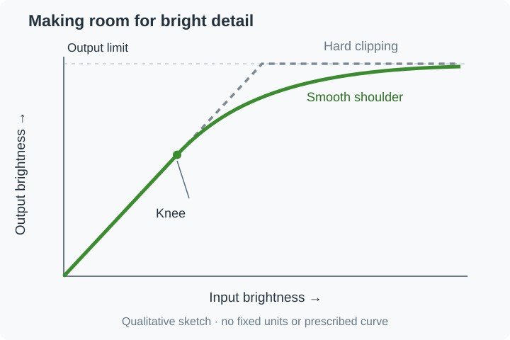

Highlight Roll-Off in Tone Mapping
Highlight roll-off gradually reduces the separation between bright input levels so they fit below the output limit.
Follow two bright folds in a white shirt. Clipping can give both the same maximum output. A highlight roll-off instead lets the brighter fold receive a little more output, while progressively reducing the room given to further source increases.

Qualitative sketch with illustrative axis spacing. It is not a measured display response or the plot of a specified implementation.
The relevant property is slope. A smaller slope maps neighboring source levels closer together. A completely flat segment maps them to the same value. A shoulder can therefore retain ordering and some texture while compressing the light differences that made the texture strong in the source.
Place the transition while there is room above it
The transition is often called a knee. Starting earlier changes more ordinary levels but leaves a larger output interval for the highest values. Starting later preserves more of the lower range while squeezing highlights into less remaining room.
For one numerical example, the smooth mapping in the curve overview takes inputs 4 and 8 to 0.9 and one. It retains a distinction, but only 0.1 of the output separates a four-unit source difference. Keeping different numbers is one part of retaining visibly useful texture.
The whole response matters in an Emby comparison: inspect the folds alongside faces and nearby ordinary surfaces, so an improved highlight is judged together with any changed lower tones. Saturated colored highlights also need color fitting. Roll-off describes the brightness response's shoulder; it does not specify the complete color conversion.
See Also
- What a Tone-Mapping Curve Controls
- Tone Mapping Curve: Mobius
- Tone Mapping Curve: BT.2390
- Gamut Mapping